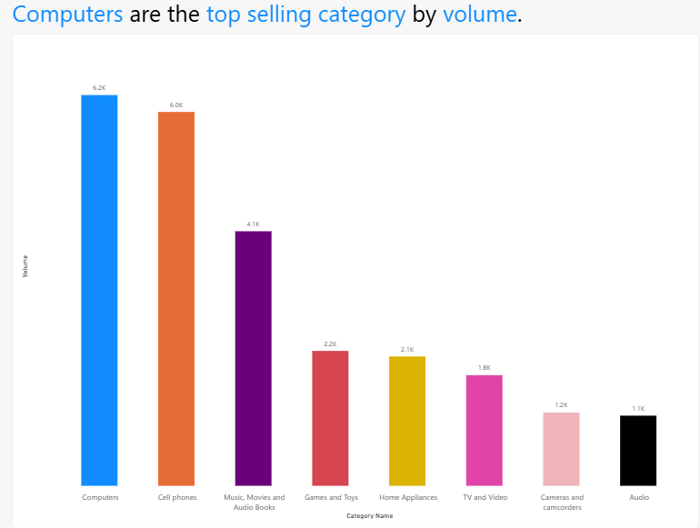
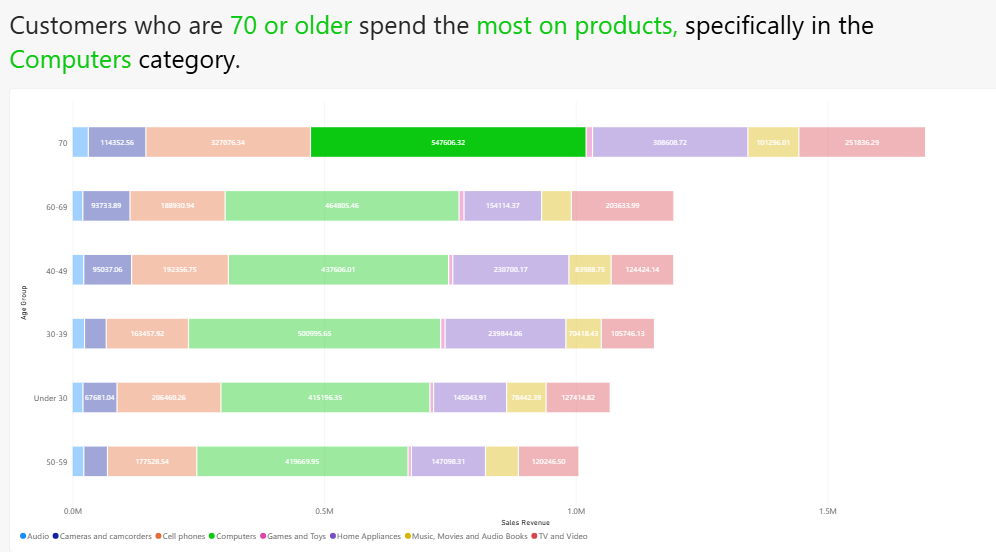
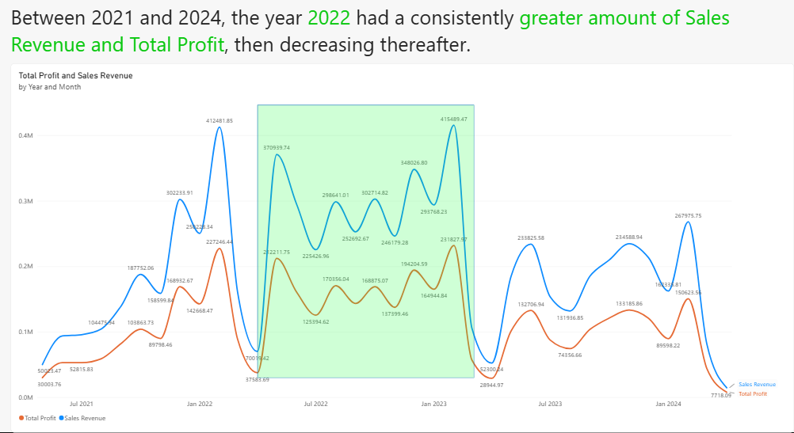

My Projects, past and present. Personal and professional.
Information Exploration
For this project, I utilized SQL (Lite), GeoPandas, and MatPlotLib to conduct some information exploration
on quantifiable wildfire reports made over the last few decades.
Given a Fact table known as "factSales", these visualizations are a demonstration of conducting some other information
exploration and analysis using PowerBI.
PowerBI
Data Visualization
Power Query



View the full galleryHide the gallery8 visualizations with captions
This is our semi-Star schema with our fact table, “factSales”, in the center. The tables “dimStore”, “dimCustomer”, and “dimProduct” each have a connecting element to the factSales table which enables us to access information between primary and foreign keys.
Top selling products by volume per category. The top selling category is Computers, followed
by Cell Phones, and Music, Movies, and Audiobooks. The sum of the factSales[Quantity] per dimProduct[CategoryName] were utilized for this visualization.
Top selling stores by sales revenue. The visualization here can
seem a bit misleading because the Online Store blows all other stores out of the water in terms of Sales Revenue, which especially makes sense in today's context. See below for a better variation.
Top selling stores by sales revenue, excluding the Online Store. Noticeably, there is now
far more competition illustrated between the other stores. This was calculated utilizing the DAX expression of Sales Revenue created earlier, followed by dimStore[Description].
which was then correlated with dimProduct[CategoryName].Monthly sales and profit changes, 2021 - 2024. As a bivariate line graph,
this illustrates how between the three recorded years, 2022 had the highest revenue and profit overall (shaded in the green), and was calculated utilzed the two Sales Revenue and Total Profit DAX expression columns from previous.Age groups that spend the most and their favorite category. This data
doesn't seem too surprising with the more elderly folk usually having more dispensable and retirement income than younger generations, of which this data also denotes their favorite
category being Computers. It would also make sense that Cell Phones and Home Appliances would be close as well considering the normal pricing for such items.
Using a wildfires dataset chosen from Kaggle, and with some help from Claude, we are able to answer certain questions such as priority resource allocation for a certain region depending
on annual reports or intensity, or trends of area damage over the last two decades, as examples. This is done utilizing SVG, Canvas, and JSON visualizations.
This is an SVG depicting the trend of the amount of area burned globally over the recent decades by land type. There is a noticieable decline, perhaps attributed
to the enhancement of worldwide technologies and tactics over time. This may also be useful for land and sustainability managers to have further awareness
in determining where to shift attention and resources during the hotter seasons. There are even known personnel and equipment exchanges that happen annually to help support
others while in an "off-season". For example, the US and Canada, in partnership with Australia, often partake in such exchanges as the fire seasons are reversed on the other
side of the equator.
Where do forests and croplands burn most?
Top 10 countries by total burned area, 2002–2022 (million hectares). Hover or tap a bar for details.
This is an HTML Canvas visulization illustrating the top 10 countries with the highest total burned area in millions of hectares
from the years 2002 to 2022. This could be useful information for different governments or supply chain managements in having further awareness for allocating
resources towards disaster prevention or material (or materiel) sourcing reallocation and dissemination.
This is a Javascript visualization of a 100% horizontal bar chart, using "Vega-Lite", illustrating the proportions of total burned areas by land type within each of the six continents.
This kind of information could be especially useful for insurance agencies and agricultural supply chains in determining risk factors based upon a certain
region's volatility.
Warrior Storyfield
Started about 15 years ago, founder Robert Bellows began Warrior Storyfield with two metal art sculptures and one heartful intent - to speak the unspoken, to speak the unspeakable.